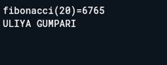

NIM : 251410008
Program Studi : Sistem Informasi
Kelas : SI2A
Halaman ini menampilkan contoh program Dart yang dijalankan melalui DartPad. Gambar di bawah adalah hasil output dari program tersebut.
